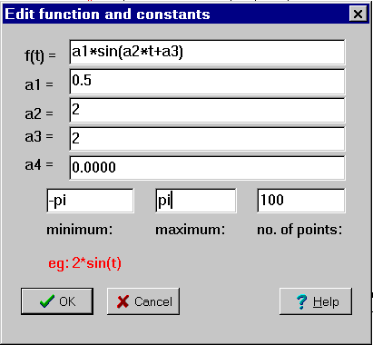
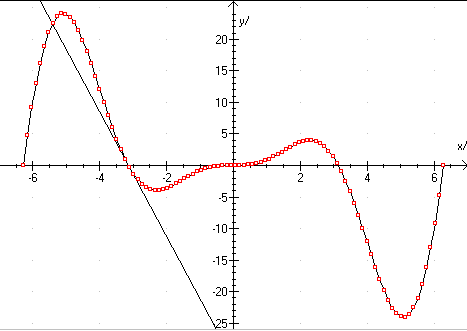

Datalyse can be used to draw mathematical functions. Choose Mathematical function analysis in the main menu and get the picture:

Here you can enter a formula. Example: 2*sin(t)
Mathematical functions:
- Operators: <, =, >, +, -, *, /, ^
- explanation: less than, equals, greater than, plus, minus, multiplication, division, involution.
- Constants: pi
- General functions: abs, sqr
- explanation: absolute value, square root
- Logarithms and exponential functions: log, ln, exp
- Trigonometric functions: cos, sin, tan, cot, arcsin, arccos, arctan, arccot
The limits, minimum and maximum, can also be used in the expression!
Example:
f(t) = t^2*sin(t)

Here, a zero point was found (-pi,0), and then the tangent was drawn.
When you click Max, Min or Zero point, the cursor moves to the next of those points, and the relevant data are written in the status line and in the memo.
See also Zero point, minimum and maximum.